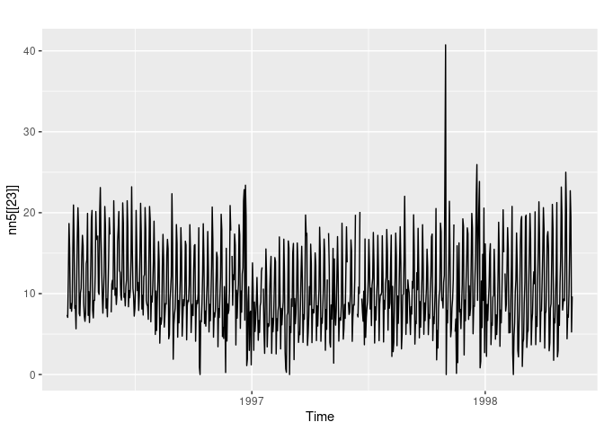

The R package tscompdata provides time series data from the following forecasting competitions: M, M3, NN3, NN5, NNGC1, Tourism and GEFCom2012.
The M, M3 and Tourism data are loaded from the Mcomp and Tcomp packages. The remaining data are contained within the tscompdata package.
Installation
You can install the development version from Github with:
# install.packages("devtools")
devtools::install_github("robjhyndman/tscompdata")Usage
library(tscompdata)
#> Loading required package: Mcomp
#> Loading required package: forecast
#> Registered S3 method overwritten by 'quantmod':
#> method from
#> as.zoo.data.frame zoo
#> Loading required package: Tcomp
library(ggplot2)
autoplot(nn5[[23]])